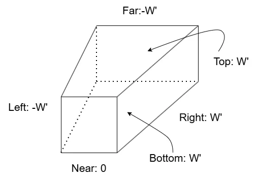
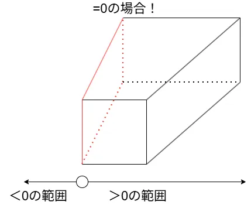
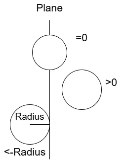
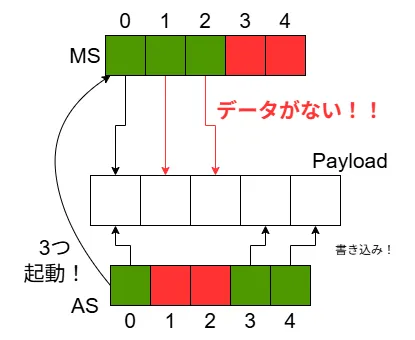
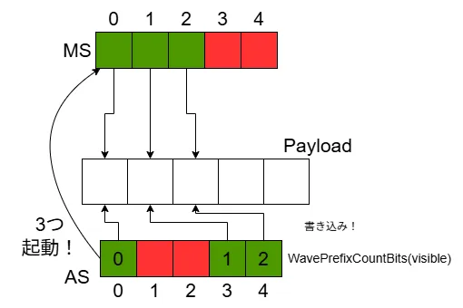
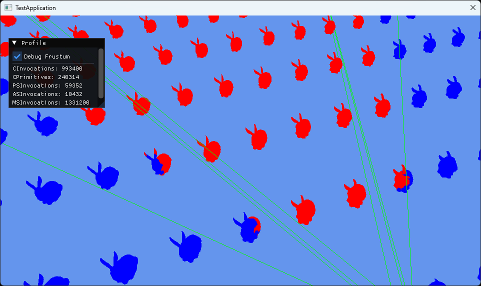

Mesh Shaderによるカリング ～ Meshlet編1 FrustumCulling ～
今回からMesh Shaderでのカリングに入っていく.
前回GPU Instancingをやったが、そこではASでDispatchMeshを起動していた.
これは逆を返せばDispatchMeshを起動しなければ、Mesh Shaderが起動されないということである.
つまりは描画が行われないということで、カリングができるということである！
そして、ASはMeshlet単位での処理を行っていて、MSではポリゴン単位の処理を行うのは前回見た通り.
つまり、
- AS→Meshlet単位のカリング
- MS→ポリゴン単位のカリング
これができるわけである！
今回は前半戦として、Meshlet単位のカリングを数回に分けて見ていこう！
参考にするのはもちろんこちら1,非常にためになってます...
さて、そしたらまずは「フラスタムカリング(Frustum Culling)」
これはカメラの視錐台の中かどうかを判定するシンプルなもの.
視錐台の中かどうかの判定は何でもいいっちゃいいんだけど、今回はシンプルにBounding Sphereを使ってやっていくことにする.
そのため、MeshletのBounding Sphereをまずは作るところから.
Meshletのデータをまずは拡張.
float4のようなデータで用意をしておく.
struct ResourceMeshlet
{
uint32_t m_vertexOffset;
uint32_t m_vertexCount;
uint32_t m_primitiveOffset;
uint32_t m_primitiveCount;
uint32_t m_normalCone;
XMFLOAT4 m_boundingSphere; // これを追加
};
meshletのBounding Sphereはmeshoptimizerを使えば簡単に作成可能.
meshopt_buildMeshletsでMeshletを作成した後であれば、Meshletのデータに参照が可能.
これをmeshopt_computeMeshletBoundsに頂点データと一緒に渡してあげれば、勝手にBuonding Sphereを作ってくれる.
// Create Bounding Sphere
std::vector<XMFLOAT4> meshletBounds;
std::vector<uint32_t> meshletCones;
for (meshopt_Meshlet& meshlet : meshlets)
{
auto bounds = meshopt_computeMeshletBounds
(
&mesh->m_uniqueVertexIndices[meshlet.vertex_offset], // start vertex index
&meshletTriangles[meshlet.triangle_offset], // start triangle
meshlet.triangle_count, // num of triangle
reinterpret_cast<const float*>(mesh->m_positions.data()), // pointer to vertex positions
mesh->GetVerticesNum(), // num of vertex positions
sizeof(XMFLOAT3) // vertex stride
);
// ...
boundsにはBounding Sphereの中心と半径が入っている.そのため、これをXYZが中心,Wが半径となるようにデータを構築すればOK.
// store sphere. Structure: XYZ=Center, W=Radius.
meshletBounds.push_back(XMFLOAT4(bounds.center[0], bounds.center[1], bounds.center[2], bounds.radius));
// ...
}
後は最後にResource側に渡してやってあげればOK.
あとはhlsl側にちゃんとデータの枠を忘れずに.
struct Meshlet
{
uint VertexOffset;
uint VertexCount;
uint TriangleOffset;
uint TriangleCount;
uint NormalCone;
float4 BoundingSphere; // 追加
};
なんかNormalConeとかあるけど気にしないでください.
これは次回にやる予定.
さて、ここまでできればBounding Sphereは求まった！
そしたら次は視錐台を用意する必要がある.
これは6個の平面を使って表現を行うが,そうなると平面を求める必要がある...
詳しい解説はFast Extraction of Viewing Frustum Planes from the WorldView-Projection Matrix2というのが分かりやすい.
ここでは単純にViewing Frustum Planeの求め方を考察してるが、日本語ではなんか説明があまり転がってなかったので、個人的に理解したものをここに残しておこうと思う.
まず最初に座標変換はWorld行列,ビュー行列,射影行列のを掛けて変換を行う.
簡単にするために,はとりあえず単位行列とする、つまりを考える.
この時、ある頂点を考える.
そして、座標変換後の頂点はとする.
そうすると、となる.これを実際に計算してみると以下のようになる.


ただし、
とする.
DirectXではクリップ空間では、まだで割ってない場合は以下のような空間になる.
これをで割ることで正規化されて0から1の範囲になり、デバイス座標に持っていけるようになるわけであるが、今回はその辺は関係ない.
そしたら図示をしてみよう、Viewing Planeは現状次のような感じになっている.

ここで各Planeに対して、FrustumPlane側かどうかを不等式であらわしてみる.
例えばLeftとRightで考えてみる.
今回まずLeftに関しては、は左のクリップ平面よりも右側にいるのであれば内側といえる.
そのためとなる.
Rightに関しては逆に右のクリップ平面よりも左側にいる必要がある.
そのため、だ.
こうすることでLeftとRightの両方が合わさる範囲を考える.
すると、という条件が見えてくるわけだ.
この条件を全部の平面に対して定義してみると、以下のような感じになると思う.
さて、ここまできたら次はLeft Planeにフォーカスを当てよう!!
まず最初にに対して、一番最初に求めたの関係式から値を代入すると,
これ、0より大きい範囲がViewPlaneのある範囲というのはわかるけど、さらに面白いことが見えてくる.
0と同じときはViewPlane内ということになる、つまり=0の時を考えればLeft Planeが分かるということである.

そういえば世の中には平面の方程式というものがあった、レイトレの交差3あたりでも似たようなことはやったね.
実は平面の方程式に今回の式を落とし込める.
実際にやってみよう、まずはに具体的な値を代入して内積を取る.
ここで、なので、
あとは平面方程式
を考えると、
から成り立つということが分かる！
こうしてLeft Planeは求まった！
ただし、今回正規化のされていない点には注意、使う場合はちゃんと正規化をした方が色々便利なのでそこはコードを組むときはやっておくと良い.
ここまでのLeft Planeだけど、全く同じ手順で全部のPlaneが求められる.
全部やると流石に面倒なので、結果だけ示しておく.
これで式が求まったけど、ちょっと疑問が残る.
今回はProjection行列はちゃんと値があるけど、View/World行列は単位行列である...
これでは使いにくいのでは...と思うけど、実はこれは簡単な拡張で済む話となってる.
今回のProjection行列の場合、つまりの場合はView空間のClipping Planeとなっている.
ここにView行列を掛けた場合、つまりの場合はWorld空間のClipping Planeが同じくを取れば求まる.
そしてWorld行列を掛けた場合、つまりの場合はObject空間のClipping Planeが同じくを取れば求まる.
といった風にProjection行列と同じような計算で求まっちゃうわけだ、ここに変換行列の嬉しい部分が出ていますね.
さて、ここまでくればやっとコードに落とし込める.
今回というのは頂点情報なので、shader側であればいいだけなのでCPUからPlaneの情報として送るのにはいらない.
なのでの部分の情報さえ送ることができれば何とかなるという訳である.
各colは行列内に配列として参照できるため、ここまでの式が理解できていればシンプルに書ける.
XMVECTOR&& NormalizePlane(const XMVECTOR& value)
{
auto* data = value.m128_f32;
float magnitude = std::sqrt(data[0] * data[0] + data[1] * data[1] + data[2] * data[2]);
return DirectX::XMVectorDivide(value, DirectX::g_XMOne * magnitude);
}
void CalculateFrustumPlanes(const XMMATRIX& view, const XMMATRIX& proj, XMVECTOR* planes)
{
auto vp = DirectX::XMMatrixMultiplyTranspose(view, proj);
planes[PLANE_LEFT] = NormalizePlane(DirectX::XMVectorAdd(vp.r[3], vp.r[0]));
planes[PLANE_RIGHT] = NormalizePlane(DirectX::XMVectorSubtract(vp.r[3], vp.r[0]));
planes[PLANE_BOTTOM] = NormalizePlane(DirectX::XMVectorAdd(vp.r[3], vp.r[1]));
planes[PLANE_TOP] = NormalizePlane(DirectX::XMVectorSubtract(vp.r[3], vp.r[1]));
planes[PLANE_NEAR] = NormalizePlane(vp.r[2]);
planes[PLANE_FAR] = NormalizePlane(DirectX::XMVectorSubtract(vp.r[3], vp.r[2]));
}
planeという配列にデータを収めるような関数を取った.を計算後、あとは上の対応に当てはめてをAdd,Subtractで足し引きするだけである.
一応ちゃんと正規化するのを忘れずに.
なので、ワールド空間のFrustum Planeなわけだ.
あとはこれを呼び出すだけ、それだけでFrustum Planeの完成！
Shader側もちゃんとデータを取るだけで終わる.簡単.
今回はデバッグ用に別データ用意してますが、あくまで大事なのはPlanesです.
struct SceneProperties
{
float4x4 MVP;
float4 Planes[6]; // これ
float4 DebugPlanes[6];
float DebugFrustum;
};
ConstantBuffer<SceneProperties> Scene : register(b1);
さて、今回はASのみ書き換えていく.
今回もIndexを取っていくところは同じ.
void main
(
uint groupThreadIndex : SV_GroupThreadID,
uint dispatchThreadIndex : SV_DispatchThreadID,
uint groupIndex : SV_GroupID
)
{
bool visible = false;
bool isInside = false;
// calculate index
uint instanceIndex = dispatchThreadIndex / Constant.MeshletCount;
uint meshletIndex = dispatchThreadIndex % Constant.MeshletCount;
// if not exceed count, set index.
if ((instanceIndex < Constant.InstanceCount) && (meshletIndex < Constant.MeshletCount))
{
Meshlet meshlet = Meshlets[meshletIndex];
Instance instance = Instances[instanceIndex];
今回のコードはIsVisibleという関数で内部かどうかを判定する.
そのためこれを呼び出す.
デバッグ用で余計な処理を付けているが、大事なのは1行のみ.
if (Scene.DebugFrustum < 0.5f)
{
// 今回の核心
visible = IsVisible(meshlet, Scene.Planes, instance.Mat, Scene.MVP);
}
else
{
// debug
isInside = IsVisible(meshlet, Scene.DebugPlanes, instance.Mat, Scene.MVP);
visible = true;
}
}
そしたらまずはIsVisibleを見ていこう.
この関数は後々色々なカリング手法をやってくが、それをまとめる場所.
bool IsVisible(Meshlet meshlet, float4 planes[6], float4x4 world, float4x4 viewProj)
{
float4 sphere = TransformSphere(meshlet.BoundingSphere, world);
// frustum culling
if (!Contains(planes, sphere))
{
return false;
}
return true;
}
MeshletのBounding SphereをWorld座標系に持ってきてカリング判定を行うだけ！
一つずつ処理を見ていこう.
まずはWorld座標系に持っていくところを見よう.
World座標系に持ってくのは非常に簡単.
MeshletのBounidngSphereのデータはXYZ->positionだった.
そのため、このデータにWorld行列を掛けるだけである.
float4 TransformSphere(float4 sphere, float4x4 world)
{
// convert world coordinate.
float4 value = mul(world, float4(sphere.xyz, 1.0f));
そしたら次に各軸に対して二乗した値を求める.
その後、最大の長さを採用して平方根を取って距離を算出.
あとはこれを使って、半径を補正しておく.
// calculate Length Square per axis
float sx = dot(world._11_12_13, world._11_12_13);
float sy = dot(world._21_22_23, world._21_22_23);
float sz = dot(world._31_32_33, world._31_32_33);
// adopt max length sq
float scale = sqrt(max(sx, max(sy, sz)));
return float4(value.xyz, sphere.w * scale);
}
まあ気持ちはわからんでもない.
とはいえ別段必要ない場合は使わなくてもよい、普通に等倍で問題ないなら普通に通常のradiusを使うのでもよい.
さて、そしたら実際にフラスタムカリングを行う.
まず大事なのは先ほどの図.
要は平面の方程式が
- 0より大きい→内側
- 0→平面上
- 0より小さい→外側
となる訳である.
ただし、今回さらに大事なこととして、BoundingSphereが外に出ているのかというのが大事だということである.

この時平面の方程式が0の状態は、一番上のようにBounding Sphereの中心が真ん中の状態であることを表す.
今回出たかどうかの判定は一番下のようにRadius分ずらした状態、こうすることで完全に出た状態といえるようになる.
ここまで分かればは中心とPlaneの情報で内積を取って計算、そして-radiusで判定を取ればよい.
これで外側と分かれば、内にはないとわかるため、falseを返して終了.
今回はPlane上に関しては内側と同じとしておいた.分けたい人は分けても良い.
bool Contains(float4 planes[6], float4 sphere)
{
float4 center = float4(sphere.xyz, 1.0f);
for (int i = 0; i < 6; ++i)
{
if (dot(center, planes[i]) < -sphere.w) // もしPlane上も弾きたい場合は` <= `に変えればOK
{
return false;
}
}
return true;
}
さて、そしたらあとは前回通り起動するだけ！！
if (visible)
{
sPayload.InstanceIndices[groupThreadIndex] = instanceIndex;
sPayload.MeshletIndices[groupThreadIndex] = meshletIndex;
sPayload.DebugColor[groupThreadIndex] = isInside ? 1 : 2;
}
uint visibleCount = WaveActiveCountBits(visible);
DispatchMesh(visibleCount, 1, 1, sPayload);
}
さて、実はここには問題がある.
カリングされてしまったら前回とは違ってデータの統一が取れていない.

図を見てほしい、例えば今回Indexの1と2の場所はカリングされたとする.
この時カリングされてるのでPayloadは0,3,4に書き込まれる.
そして、ASからは3つのMeshletがDispatchMeshで起動が行われる.
MS側では先頭からデータがあると思ってアクセスする.
その際のIndexは...0,1,2！！
これでは1,2はデータがない状態になってしまう...
そこでWaveには非常に便利な関数WavePrefixCountBits4が用意されている.
各Laneにおいてtrueとなっている数を数えて、先頭からその数をindexとして取得できる機能.
これを使えば先ほどの図は次のように変わる.

WavePrefixCountBitsを使ったことで、ASのLaneの緑の部分が先頭から0,1,2と分かった！
このIndexを使って書き込みを行えば、ちゃんと整合性の取れるデータになるわけだ.
後はこのIndexを使って書き込みを行うように修正するだけ.
if (visible)
{
uint index = WavePrefixCountBits(visible);
sPayload.InstanceIndices[index] = instanceIndex;
sPayload.MeshletIndices[index] = meshletIndex;
sPayload.DebugColor[index] = isInside ? 1 : 2;
}
結果を見てみよう.

赤い部分が内側判定,青い部分が外側判定となっている.
いい感じに弾かれているっぽいですね.
これで一番単純なフラスタムカリングは終了！！
次は法錐カリングの予定～.